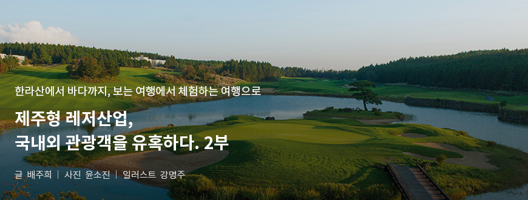
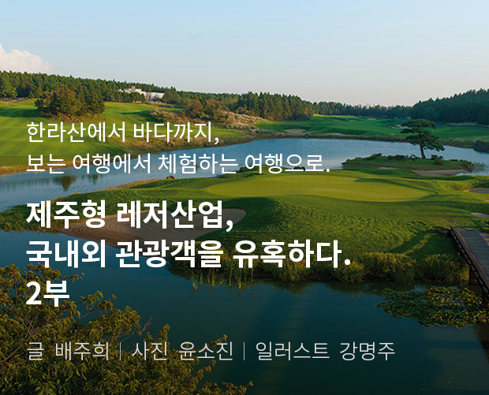
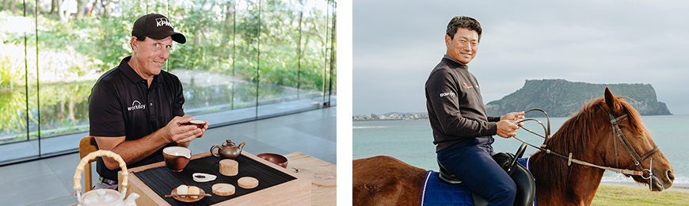

기획취재콘텐츠
- Home
- 제주라이프
- 기획취재콘텐츠
제주형 레저산업, 국내외 관광객을 유혹하다. 2부새로운 글




골프 유망주의 꿈의 무대이자 지역 경제 활성화의 장, 더CJ컵
CJ그룹이 주관하는 더CJ컵은 대한민국에서 개최되는 최초이자 유일한 PGA투어 정규대회다. “Bridge to Realization”이라는 대회 콘셉트 아래 국내 남자 골프 유망주들이 세계무대 도전의 꿈을 이루도록 도와주는 기회의 장이자 지역 경제 활성화에 기여하는 국제 이벤트로서 그 역할을 다 하고 있다.
- 아시아 선수 최초 PGA 신인왕을 수상한 임성재 선수가 더CJ컵 2019에서 티샷을 날리는 모습 ⓒCJ그룹 -
2017년을 시작으로 10년간 개최될 예정인 더CJ컵은 지난해까지 제주도에서 총 3회의 대회를 치렀다. 개최 성과는 가시적으로 나타날 만큼 크다. 지난 3년간 각각 3만 5천, 4만 1천, 4만 6천여 명의 갤러리가 대회장을 방문하며 제주도는 직·간접적으로 엄청난 경제 효과를 거두었다. CJ그룹이 제공한 리서치 전문 업체 조사 결과에 따르면 2018년도 기준으로 대회장을 방문한 갤러리 1명이 하루에 약 17만원 지출한 것으로 조사되었으며, 2018년 더CJ컵의 직접적인 경제효과는 약 249억 원으로 추산된다. 또한 전 세계 226개국 10억 가구에 총 23개 언어로 중계 방송되며 약 1,840억 원에 가까운 미디어 노출 성과를 거두며 엄청난 경제 효과를 거두었다.
또 CJ그룹은 제주도관광공사와 협력, PGA투어 주요 선수들과 함께 제주 특산물과 독특한 자연 환경을 배경으로 홍보 영상을 제작하여 제주를 전 세계에 알리는데 기여했다. 초대 대회인 2017년에는 아담 스콧이 서핑을 즐기고 제이슨 데이가 해녀가 갓 잡은 해산물과 제주 특산물인 흑돼지 구이를 맛봤다. 또한 2018년에는 대니 윌렛이 오름을 찾아 제주에서만 느낄 수 있는 아름다운 풍광을 만끽했었고, 브룩스 켑카가 제주 앞 바다에서 51cm짜리 황돔을 낚으며 전 세계 미디어와 SNS를 통해 많은 골프 팬들에게 회자되기도 했다.
작년에는 미국과 한국을 대표하는 선수인 필 미켈슨과 최경주가 나서 제주도의 녹차 밭과 녹차, 승마를 체험하는 모습을 전 세계에 보여주기도 했다. 더CJ컵을 찾은 유명 골프 선수들이 제주를 만끽하고 즐거워하는 모습을 가감 없이 보여줌으로써 제주의 매력을 전 세계 알리는 가교 역할을 톡톡히 한 셈이다.

- (좌)2019년 제주에서 다도 체험을 하며 한국 문화를 즐긴 필 미켈슨 선수 ⓒCJ그룹,
(우)승마 체험을 한 최경주 선수 ⓒCJ그룹 -
(우)승마 체험을 한 최경주 선수 ⓒCJ그룹 -
제주의 환경과 완벽하게 조화를 이룬 골프장, 클럽나인브릿지
대회가 열리는 클럽 나인브릿지는 ‘자연과 골프가 완벽하게 조화를 이루었다’는 평가를 받는다. 제주도의 자연적인 특징이 살아있으면서도 골퍼의 수준별로 각기 다른 공략 법을 제시할 수 있도록 조성된 코스로 유명하기 때문. 또한 PGA투어 선수들도 혀를 내두르는 제주 특유의 소용돌이 바람과 착시 현상을 일으키는 ‘한라산 브레이크(break)’2) 그리고 훌륭한 자연 경관은 전 세계적으로 제주를 알리는 핵심적인 매력 포인트다.
클럽 나인브릿지는 세계적인 골프 전문 매거진인 골프다이제스트에서 2년마다 발표하는 ‘전 세계 골프 코스’ 순위에 2018년도에는 23위, 2020년에는 18위를 기록하며 다른 세계적인 골프장과 어깨를 나란히 하는 높은 수준의 골프장이다. 뿐만 아니라 한국 베스트 코스 6회 연속 1위(2019년 기준)를 차지하고 2017년에는 국내 골프 코스 명예의 전당에 입성하는 등 국내 및 전 세계적으로 인정받고 있다. 18년 전 국내 최초의 LPGA 대회를 개최하기도 했고, 전 세계 유수의 골프 클럽들 간의 대항전인 월드 클럽 챔피언십 등 해외 유수의 대회를 개최해온 역사가 깊다.
※ 2) : 한라산의 영향으로 그린의 경사가 눈에 보이는 것과 다른 현상을 지칭
- 자연과 어우러진 수려한 경관을 자랑하는 클럽 나인브릿지의 18번 홀 전경 ⓒCJ그룹 -
- 시상식을 위해 18번 홀 그린으로 걸어가는 저스틴 토마스 선수 (2019) ⓒCJ그룹 -
CJ그룹이 클럽 나인브릿지 건설지를 물색하던 중 제주도를 택한 이유가 있다. 국내 대부분의 골프장이 산악 지형에 건설되고 산을 깎는 과정 중 상당한 자연훼손이 불가피하지만, CJ그룹은 자연 훼손을 최소화 하고 자연을 최대한 그대로 살린 세계적인 수준의 골프장을 만들기 위해 평탄한 구릉지이면서 천혜의 지형 조건을 가진 제주도를 택하게 되었다고.
제주도는 4계절 골프를 즐길 수 있는 천혜의 자연 조건을 가지고 있고, 섬 내에서 다양한 자연 환경의 변화를 느낄 수 있는 좋은 조건을 가지고 있어, 골프 관광을 위한 최적의 지역이라고 생각합니다. 골프뿐만 아니라, 다양한 볼거리, 즐길 거리, 먹을거리가 있고, 현재 제주도에서 추진하고 있는 친환경 정책으로 인한 청정 제주의 이미지 또한 골프와 관광 산업의 발전 가능성을 높여 준다고 생각합니다.
- 김유상 CJ그룹 스포츠마케팅 부장
제주 골프 산업과 선수, 지역의 성장을 위해 지속적으로 노력할 것
CJ그룹은 PGA투어의 개최를 추진하면서 대회 장소로 제주도의 클럽 나인브릿지를 우선적으로 염두에 두었다. 나인브릿지는 많은 국제 행사를 통해 전 세계 골프 관계자로부터 인정을 받은 코스였고, 제주도의 아름다운 자연 환경을 전 세계로 보여 줄 수 있는 최적의 코스라고 생각한 것이 그 이유였다. 그리고 제주도가 가지고 있는 볼거리, 먹거리, 즐길 거리들을 대회를 통해 전 세계에 널리 알릴 수 있으면 좋을 것 같다고 생각하여 우선적으로 제주도에서 개최를 결정하게 되었다고.
더 CJ컵은 3년밖에 되지 않은 역사가 짧은 대회이지만 CJ그룹만의 차별화 전략으로 더욱 수준 높은 대회가 되도록 철저히 준비하는 것은 물론, PGA투어 선수 및 갤러리들의 마음을 사로잡기 위해 계속해서 노력할 예정이다.
아쉽게도 올해는 코로나 19 사태로 인해 제주가 아닌 미국에서 대회가 열릴 예정이지만 앞으로도 더 CJ컵은 더 CJ컵만의 특징을 잘 살려서 선수와 팬들이 가장 좋아하는 대회로 발전할 것이고, 아울러 더 CJ컵이 지향하고 있는 골프 대회를 통한 한국 남자 골프, 골프 산업, 지역 경제, 한국의 문화의 세계화 등의 비전이 대회의 성장과 함께 이루어 질 수 있도록 노력을 지속하겠다는 포부를 밝혔다.
- THE CJ CUP에 몰린 구름 관중 (2018년) ⓒCJ그룹 -
이전글
다음글